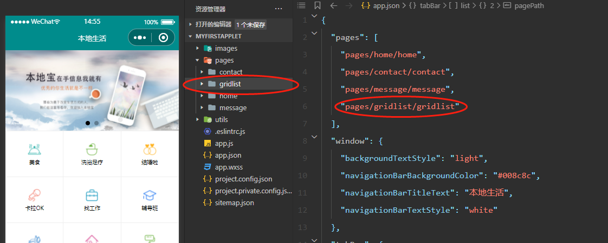
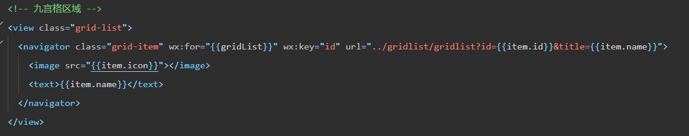
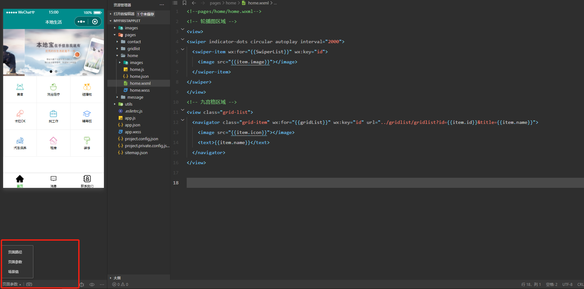
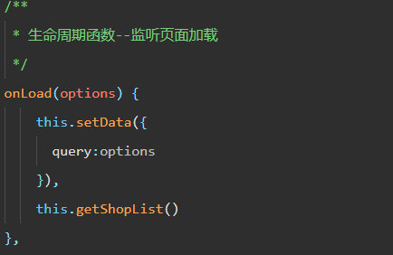
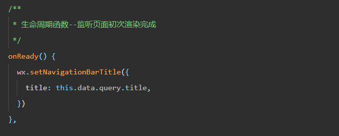
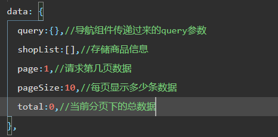
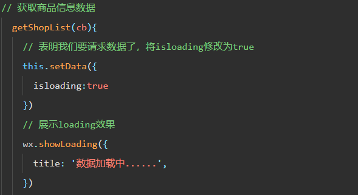
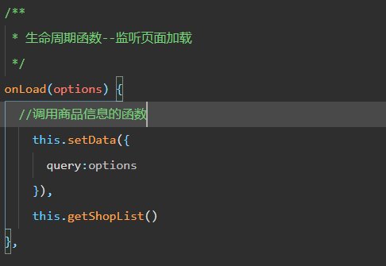
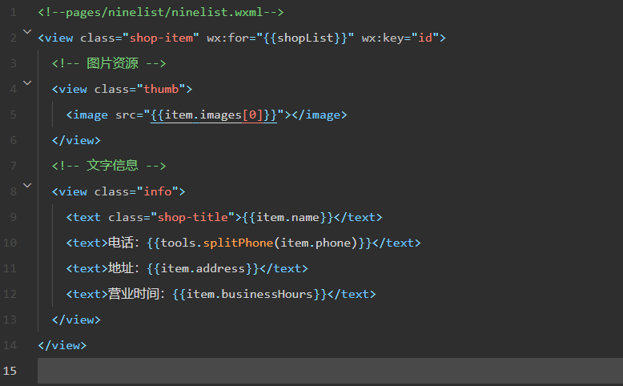
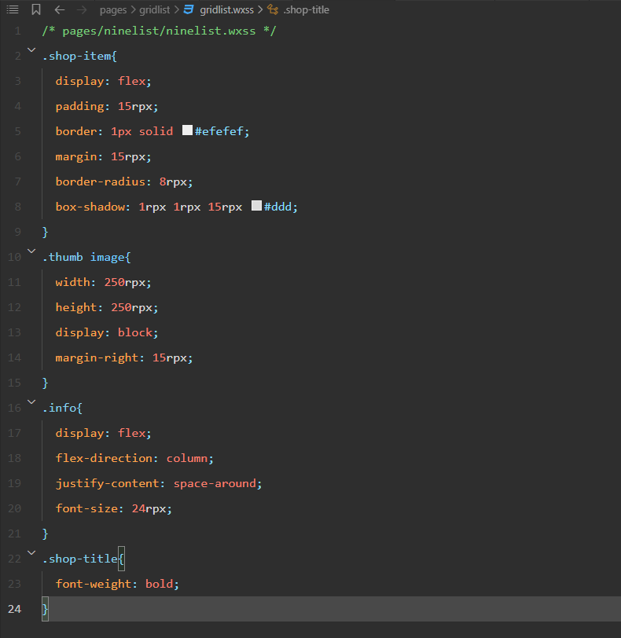

小程序案例
借助黑马的本地生活案例，加强一下自己对小程序的学习，并将学习过程分享出来，希望能和以前学习的知识相互印证
-
实现九宫格的导航跳转
在配置好九宫格后，我们还需要让其实现跳转到相应页面的功能
-
首先，我们需要先额外创建一个文件夹，用来存放九宫格跳转路由时用到数据的组件
如下：  -
创建好gridlist组件后，将我们之前九宫格的view标签修改为navigator标签，添加url属性，并书写好要跳转组件的路径，并传递参数，进行导航跳转
如下： 这个时候可以把左下角的选项改成页面参数，并点击九宫格的不同选项，观察变化。
如下： 如果没有问题，则这里的参数会随着我们的点击而改变成相应的标题
-
我们还需要实现跳转页面的同时标题也相应改变。
这里我们需要用到微信小程序给的接口setNavigationBarTitle，那么如何调用 setNavigationBarTitle 呢？官方文档明确告诉我们调用的时机
-
我们需要在gridlist组件的js文件中进行相关配置，通过onLoad函数，拿到传递过来的query参数，并将参数更新到data中。
如下：  -
在onReady函数中调用相应API，并从data拿到query的参数值，并渲染到页面
如下： 
-
-
实现了标题内容之后，接下来需要实现，在点击相关九宫格选项之后，将相应的标题下的内容进行渲染出来
根据调用接口后返回的数据，我们可以创建存放数据的列表
如下：  -
同理，利用提供的接口，调用微信的request方法，发起get请求，拿到商品数据
如下：  -
最后在onload（options）（监听页面加载）生命周期函数中，调用上述方法。
如下：  -
将调用的数据渲染到页面上
、如下：  -
添加样式
如下： 到这为止，我们的九宫格功能也全部完成了，点击之后会出现一排一排的商品排列以及信息。
-